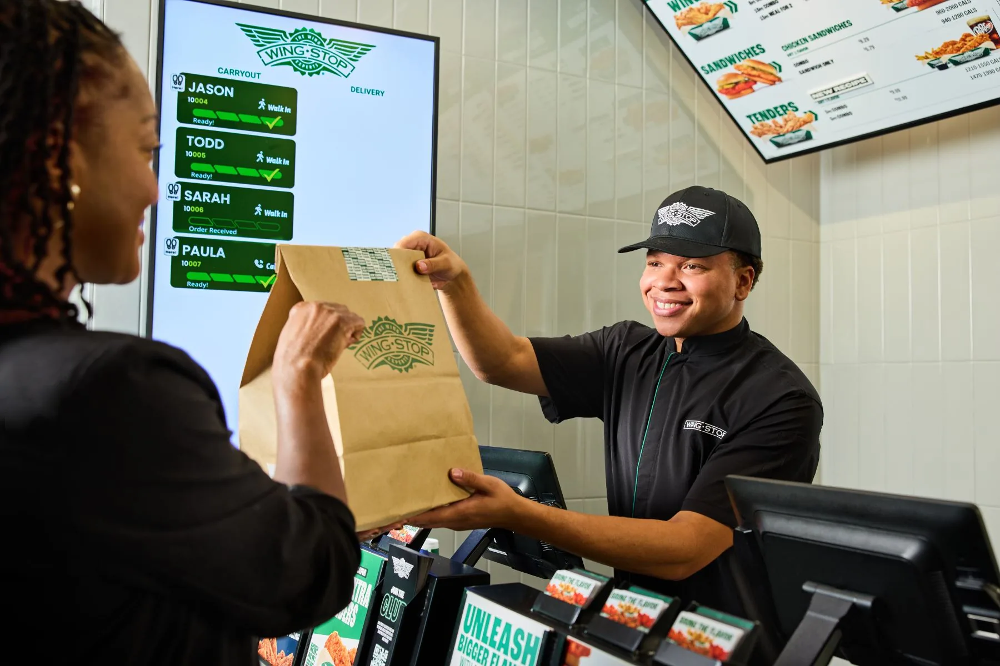
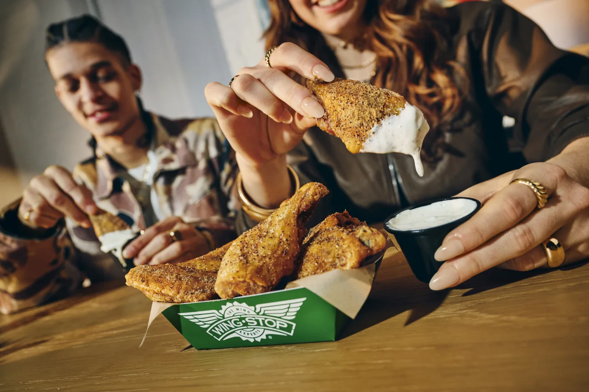
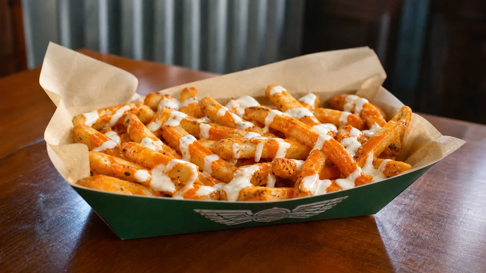

ORDERING GUIDE
How to Reheat Wingstop Wings and Fries

An air fryer or oven restores more exterior texture than a microwave. Food safety comes first: refrigerate leftovers promptly, reheat only safely stored food and bring poultry to a safe internal temperature.
Before Reheating
- Separate chicken, fries and cold dips.
- Use one layer.
- Check temperature, not time alone.
- Discard questionable leftovers.
Separate the Order Before Heating Anything
Remove ranch, bleu cheese, honey mustard, veggie sticks and drinks from the bag. Cold dips should remain refrigerated, not warmed beside the chicken. Separate fries from wings because they need different timing and airflow. Loaded fries need their own plan because cheese and ranch make full crispness impossible to restore.
Sort classic wings, boneless wings and tenders when the order contains several formats. Their thickness and breading differ, so one timer will not finish every piece equally. Separate very saucy wings from dry-seasoned wings as well. Sugar-rich sauces can darken faster under high heat.
Do not reheat food simply because it looks normal. Confirm it was refrigerated promptly and stayed cold. When the time or temperature history is unknown, discarding it is safer than testing it through smell or appearance.

Air-Fryer Instructions for Classic Wings
Preheat the air fryer near 350°F. Arrange classic wings in one layer with space for air to move. Heat for three to four minutes, turn, then continue in short intervals. Check the thickest edible section reaches 165°F without placing the thermometer against bone.
Dry-seasoned wings usually tolerate circulating heat well. Wet sauces may become sticky or dark around the edges, so watch them closely. If the exterior is coloring before the center is hot, lower the temperature and extend the time rather than burning the sauce.
Do not overcrowd the basket. Two small batches often finish faster and more evenly than one packed batch. Rest the wings briefly after heating; steam and sauce can be much hotter than the exterior suggests.
Air-Fryer Instructions for Boneless Wings and Tenders
Boneless wings and tenders have breading that can crisp effectively in an air fryer but can also dry out. Begin near 350°F and check earlier than you would for a large bone-in piece. Turn once and stop as soon as the center reaches 165°F.
A light coating of existing sauce should be enough; adding oil is usually unnecessary. Extra sauce can be warmed separately only in a microwave-safe container and applied after the chicken is hot. Never reuse dip that has been contaminated by partially eaten chicken.
Tenders vary in thickness. A large tender may need more time than several boneless pieces. Temperature is the controlling test. Cutting the largest piece can confirm heat distribution, but a food thermometer provides a more reliable target.
Oven Method for a Large Batch
Preheat the oven to 350°F. Place a wire rack over a sheet pan when available; the rack lets hot air reach more of the exterior. A lined sheet pan also works, but turn the pieces so the bottom does not remain soft.
Arrange chicken in one layer and avoid covering it with foil, which traps steam. Heat, turn once and begin checking temperature before the expected finish. A crowded pan, refrigerator-cold chicken and thick tenders all extend the time.
The oven is preferable for a party-size leftover order because it maintains an even environment across several pieces. Use separate zones or pans for dry and wet flavors. Do not let Atomic sauce transfer onto mild wings while reheating.
Microwave Method When Speed Matters
The microwave heats the interior quickly but softens skin and breading. Place chicken on a microwave-safe plate, cover loosely with a microwave-safe cover or paper towel, and heat in short intervals. Rotate and turn pieces between intervals to reduce cold spots.
Let the plate stand briefly, then check 165°F in the thickest piece. Microwave heating can be uneven, so steam at the edge does not prove the center is safe. Finish in an air fryer or oven for a few minutes when texture matters.
Never assume a Wingstop takeout container is microwave-safe. Transfer food to a labeled microwave-safe plate. Metal, foil, unknown plastics and tightly sealed containers can be unsafe or damage the appliance.

How to Reheat Seasoned Fries
Use an air fryer around 350°F to 375°F or a fully preheated sheet pan. Spread fries in one layer, heat briefly and shake or turn once. Remove fries as soon as the exterior improves; extended heating dries the interior before every fry becomes crisp.
Seasoned Fries may taste saltier after moisture is lost, so do not automatically add more seasoning. A very small batch can be reheated in a dry skillet over medium heat, turning frequently. The microwave is the least effective method for fry texture.
Our Wingstop sides guide explains why fries deteriorate faster than corn or veggie sticks during travel. The same moisture problem continues during storage.
Loaded Fries Need Different Expectations
Louisiana Voodoo Fries and Buffalo Ranch Fries contain wet toppings. Cheese sauce and ranch soak into the potato, so the original crisp exterior cannot be fully recovered. Reheating too aggressively can split the sauce or burn exposed edges.
Use a moderate oven in a shallow oven-safe dish until the center is hot. An air fryer can blow toppings or make cleanup difficult. Never heat cold ranch cups with the fries. When quality matters, loaded fries are better ordered in a quantity that will be eaten fresh.
Food-Safety Rules for Leftovers
USDA leftovers guidance says refrigerate perishable food within two hours, or within one hour when ambient temperature is above 90°F. The clock includes travel, serving and time on the table.
Reheat poultry leftovers to 165°F. Store leftovers in shallow containers so they cool promptly. Follow USDA storage guidance and discard food left too long or kept at an uncertain temperature. Reheating does not make mishandled food safe.
Only reheat the portion you plan to eat. Repeated cooling and reheating reduce quality and create more opportunities for unsafe handling. Keep cold dips refrigerated and use clean utensils rather than dipping reheated food into a cup used during the original meal.
Troubleshooting Common Reheating Problems
The wings are dry
The temperature was too high, the time was too long, or the pieces were reheated more than once. Use shorter intervals and check the center earlier.
The breading is soft
Steam was trapped or the basket was overcrowded. Use dry circulating heat, one layer and no foil cover.
The sauce is burning
Lower the temperature and extend the time. Sweet sauces darken faster than dry rubs.
The fries are hard
They were heated too long. Fry texture improves in a narrow window before moisture loss makes the center tough.
Reheating Different Flavor Styles
Lemon Pepper and other dry-seasoned wings usually respond well to circulating heat because there is less wet sauce to burn. Keep the temperature moderate so seasoning does not scorch, and remove burned crumbs between batches.
Original Hot and other wet sauces can dry at the edges. Use shorter intervals and lower heat when needed. Mango Habanero and barbecue-style coatings contain sweetness that can darken rapidly, so watch them closely. Keep Atomic separate from mild pieces.
Garlic Parmesan may release fat as it warms. A rack keeps the bottom from becoming greasy, while excessive heat can make cheese or garlic bitter. Stop when the center is safe instead of chasing the surface texture of a dry rub.
Plan Leftovers Before Dinner Ends
Move food intended for later into shallow containers before it sits through an event. Label the date and flavor. Store fries separately because wings release moisture and sauce that make potatoes softer.
Large party orders cool slowly in deep boxes. Divide them into shallow containers and refrigerate promptly. Keep cold dips in closed cups and never return used communal dip to a clean container.
Equipment and Cleanup Checklist
- Use a clean basket, rack or pan.
- Use a calibrated thermometer.
- Wash tongs between cold handling and finished food.
- Clean sauce residue before another flavor.
- Use microwave-safe plates, not unknown packaging.
A thermometer matters more than a perfect timer. Appliance power, starting temperature, thickness and batch size change the required time.
Choosing the Method by Leftover Type
Use an air fryer for one or two servings when texture is the priority. Use an oven for a large mixed batch. Use a microwave when speed or accessibility matters, accepting a softer exterior. A skillet is practical for fries but less reliable for thick chicken because the center can remain cool while the surface darkens.
Dry wings, wet wings, tenders and fries should not share one heating schedule. Start with the thickest chicken, add smaller pieces later and reheat fries separately at the end. This sequencing lets everything reach the table hot without drying the smallest items.
If only a microwave is available, prioritize safety and even heating. Use lower power or shorter intervals, turn pieces, allow standing time and verify 165°F. Texture is secondary to a safely heated center.
Final Serving Check
Use a clean plate for finished food rather than returning it to the cold-storage container. Add refrigerated dip only after reheating is complete. Serve immediately and discard any portion with an uncertain storage history, off condition or repeated time at room temperature.
Final Recommendation
Reheat only the portion you plan to eat. Repeated warming costs texture and complicates safe handling, while a cold dip should stay refrigerated rather than sitting beside a hot appliance. When pieces vary in size, test the thickest one in the center and continue in short intervals instead of extending every batch by a fixed time. Return untouched refrigerated portions to the refrigerator instead of leaving the entire container on the counter. Use clean plates and utensils for reheated food rather than returning it to packaging that held cold leftovers.
Use an air fryer for a small batch, an oven for a large batch and a microwave only when convenience outweighs texture. Separate chicken from fries, keep cold dips refrigerated and heat poultry to 165°F.
Timing is an estimate. Check early, turn pieces and use a thermometer. Sweet sauces need gentler heat, dry rubs tolerate airflow better and loaded fries require realistic expectations. When storage history is uncertain, discard the leftovers instead of relying on reheating to make them safe.
Serve each reheated batch immediately after its final temperature check.
FAQ
Can I reheat Wingstop ranch?
No. Keep cold dips refrigerated and separate from hot food.
What temperature should reheated wings reach?
USDA guidance uses 165°F for leftovers. Measure the thickest part without touching bone.
Is an air fryer better than an oven?
The air fryer is efficient for a small batch; the oven handles a large batch more evenly.
Can I reheat wings twice?
Quality declines with repeated reheating. Heat only the portion you intend to eat and follow safe storage guidance.